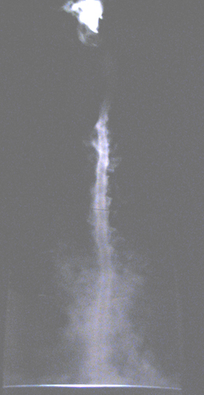
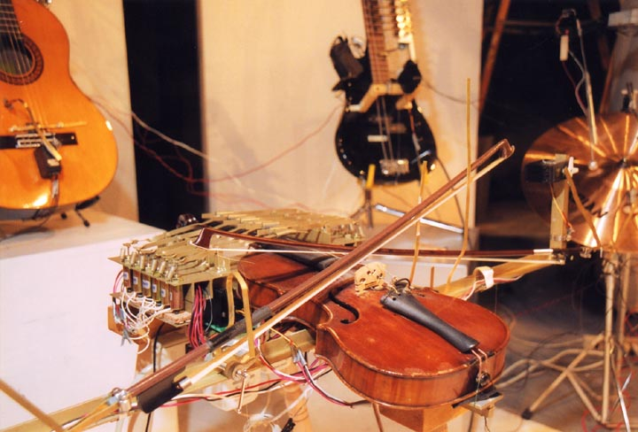
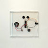

people doing strange things with electricity
The nine million and second dorkbot-nyc meeting took place on Wednesday, September 7th at 7pm at Postmasters Gallery (459 West 19th Street in Chelsea).
It featured the lovely and talented:

Mark Esper: Self-generating Tornado
Mark Esper will present a self generating tornado which will be part of his installation at the Dam-Stuhltrager gallery in Williamsburg, Brooklyn, September 10 through October 16, 2005. Mark will also show images of other technologically based art of his and discuss them as best he can.
mesper at panix com
http://www.damstuhltrager.com/art_pages/mark_esper/me.html
Kurt Coble: PAM Band
The P.A.M. Band (Partially Artificial Musicians), is a synthesis of kinetic sculpture, musical composition, theater, and technology. The concept is the rediscovery of the rich tradition of the automata, while responding to contemporary cultural issues, without using MIDI technology. The project takes the notion of musical invention to a deeper level. At the heart of P.A.M. Band instruments is a motion control card that allows for the precise manipulation of servo motors, solenoids, and DC motors. The "feel" of the energy released by the motors informs me of the nature of the potential sounds and instruments to be investigated. The first phase of the project feature mechanical solutions for traditional musical instruments, with the hint of prototypical instruments not far behind. Sequences that run the programmable motors are written in C++.
http://www.pamband.com
 Tristan Perich: One Bit Music
Merging his interests in physical computing and electronic music, artist and composer Tristan Perich will give a presentation on his recent project, One Bit Music. Electronics programmed and packaged in a standard CD jewel case by Perich play minimal glitch/dance music when headphones are plugged in. The device is meant to fit into the standard album-based method of music distribution: you will find it along other CDs in a record store and it has different tracks; it will be released by Cantaloupe Music in the upcoming months. Perich will exhibit the device, play a sampling of his music, and explain how it works and came to be.
http://www.tristanperich.com
http://www.onebitmusic.com